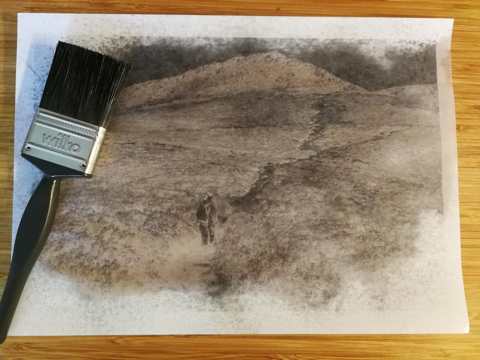
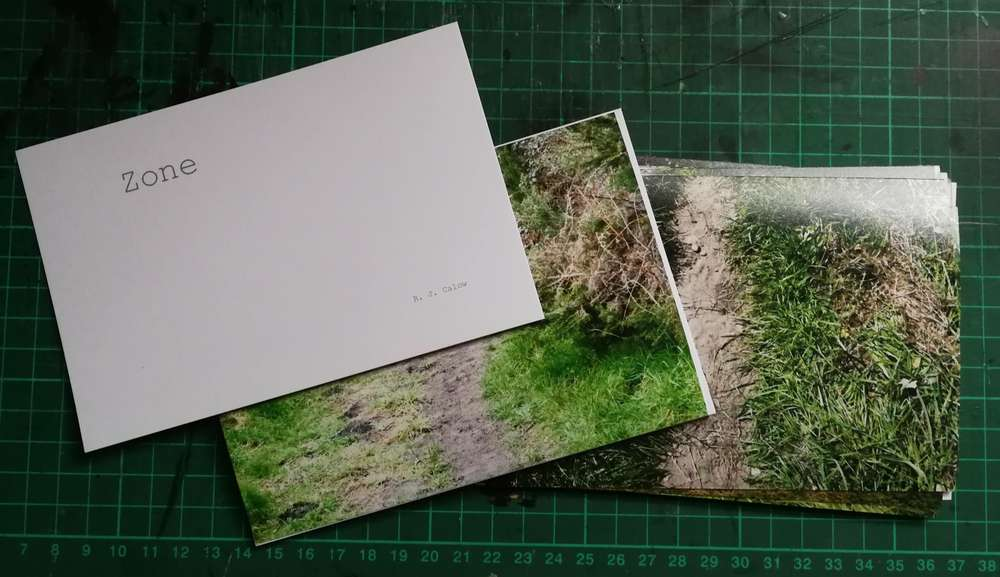
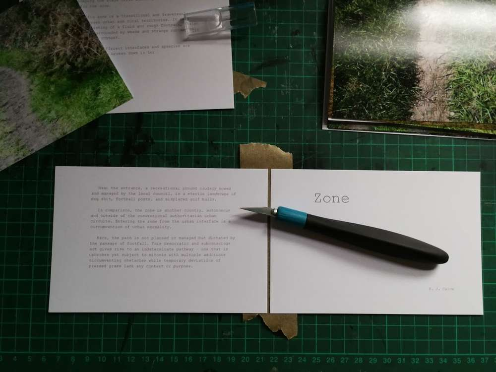
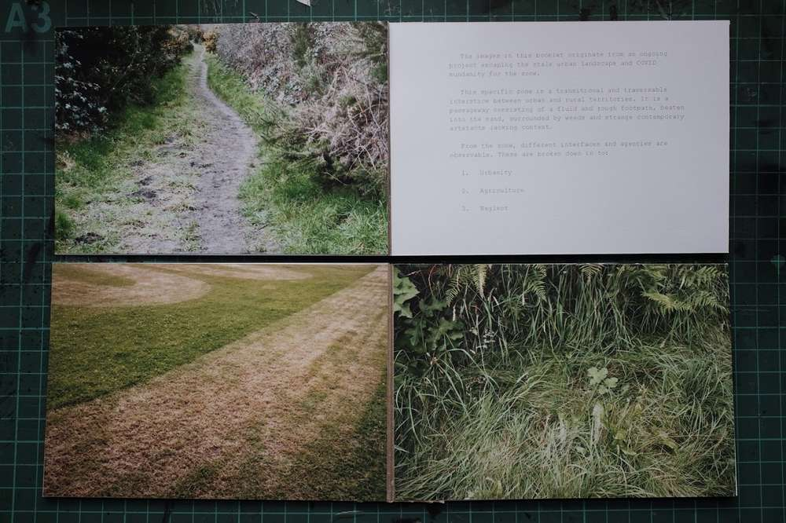

Materials: cheap 6x4 photo prints, tape, glue and cardboard.
My process right now: I take two prints and tape them at the back creating a simple book signature. I then double sticky tape one end to the back of another signature. And repeat. To make it even stronger: glue and tape the spine.
For this experiment, binding some leftover prints: I made a hardcover out of spare cardboard and more tape. The spine of the signatures and the hardcover is simply glued together. I made it all a little too tight, stopping the book from being a flat lay. It’s okay for the first try. To really finish it, it needs a cover. I hope to make more with mini-projects.
Dark winter days have a left a blue void, creating a need toward a suitable light source for printing cyanotypes.
Using google for the subject. You find terrible archived forums advocating repurposing UV tanning appliances/bulbs and a blather of pointless arguments on different lighting types.
Setting this rubbish aside I found a small amount of more credible information via books as well as asking artists and friends.
Wavelength of the light source is important. Many of the cheaper light sources are vague and questionable. The apparent magic number often seen is 365nm, while 405nm which is usually used for resin curing does not work, but given the obscurity of some products mileage may vary.
I found a cheap set of LED UV bulbs with a wavelength of 365nm - 400nm. The wattage is 7W and takes around 2 hours to contact print with a desk lamp and negative. This seems to check out, with my friends 13w energy saving UV bulb taking one hour to expose.
A basic setup with a desk lamp.
Things to do
Rig up two lights for faster exposure. This could be done with cheap pendent lights and a box. A lid could hold the lights in place allowing for consistent results. I could even use a smart extension plug to time the exposure.
Figure out and dial in exposure. I need to work out a process for creating a suitable negative for cyanotype printing. This is normally done with a curves tool to limit the dynamic range.
Using this method preparing for the cyanotype process, but it is adaptable for others.
Basic process
Image is inverted and prepared for printing.
Generic standard 80gsm plane paper.
Printed with settings for plain paper, standard resolution and monochrome.
On the backside of the paper. Use generic spray cooking oil.
Spread with a brush. Repeat till even or satisfied with transparency -it doesn't take much oil till its transparent but results may vary on oil/paper.
Ensure oil is spread well and dry or risk staining the paper during printing.

Thoughts on process and outcomes
Not as sharp as transparency film.
Denser than transparency film. Exposure times are longer.
I normally expose transparency film for an hour in the shade for indirect light minimizing blurring.
Paper negatives needed around an hour and half in shade.
Painterly imperfections - oil splodges had a texture to the resulting image.
Flipping the image for ink to emulsion contact results in less imperfections.
Overtime the oil dries within the paper negative, becoming denser. They have a short life span, maybe a week or so. I imagine in certain conditions the oil could go rancid if long term storage was desired -but you could just print and oil another negative.
Having lost my canon photo printer to printhead rot, I have been using cheap/free services of 6x4 prints for my photo sketchbook. The prints are respectable for, at times, the price of postage and almost the right size for my a5 concertina sketchbook. Having used these cheap prints for weeks in my sketchbook, I started playing with the idea of making mini sketchbooks/zines/booklets for projects.
I tried Japanese stab binding, concertinas, and perfect bound techniques. These were either too awkward, time consuming, or failures - particularly perfect bound as the print papers are too thin for the application of glue. Additionally, given that I am dealing with single prints or "loose leaf", having one print per "page" made it very limiting.

One solution I came up with is to use postage tape and join up pages and create signatures. The tape is placed on one side and excess is cut off.

Double sided tape is applied to the other side and pages/prints are applied, forming four pages.
These signatures are gathered in the right order and glued at the spine. You can either steal your room mates flower press or use strong clips as a substitute for a book binding press. It can take several coating of PVA glue, making sure contact is made between the signatures.
The result is a strong binding that has a flat flay.

With the accessibility of cheap book production services, is it worth the time and effort?
Probably.
I would argue that for small side projects, sketchbooks and limited photobooks, that it is worth it.
Doing it by hand, you have more control. You want an unconventional feature -do it. Have access to a photocopier or a convenient/cheaper source of prints? Use that. Make each edition different if you wanted. You have freedom to apply contextual patterns and themes within the project to the narrative through the physical presentation of your work.
To conclude
These zines, like their subject matter, are informal and imprecise.
There MUST be better methods for loose leaf binding, but they are obscure and the search continues.
Cheap photo papers, by themselves, are difficult to perfect bound.
If you are making a large quantity or seek perfection, just use a cheap book production service.
Using the obsolete digital camera featured in [[Lumix TZ10]] infrared conversion. I combined defunct digital technology with traditional print making.
The images
Making the cyanotypes
The digital images are inverted and prepared for a4 printing. I used Permajet digital transfer film, using an inkjet printer that is not suitable and needs persuasion.
To create the cyanotype I use an old photo frame to press the negative to the cyanotype emulsion. I leave the frame in the shade to exposure for one hour, finding that using indirect light within the shade leads to an even exposure.